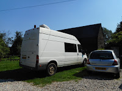

 |
| At the time of the incident the rather smart extractor fan on the r.h. side had not been installed. There was only the rusty chimney. Enough to place it instantly beyond the pale? |
{kind=link}
That's because they're Travellers. At school (in Essex) they were usually described as pikeys. You could think this was a nice 18th century souvenir of life on the turnpike roads..trust me, in Essex it isn't meant like that.
I can remember when my county had a stronger market gardening aspect to its agriculture and the Travelling families with their regular arrivals and locations had a recognised part to play in pulling leeks and harvesting sprouts, for instance. Tough monotonous jobs to be done most usually in hand-freezing winter weather. My impression was that although there was a massive cultural divide -- and 'pikey' was the standard descriptor -- yet there was some interdependence and respect. That type of farming is gone from here and even that most minimal tolerance appears to have vanished with it. When vans and caravans arrive in locations where they have possibly been camping for decades longer than many residents have lived in their houses, local community social media goes into panic mode . It makes me feel sad to see laybys, green lanes and little patches of common land surrounded by council-dug earthworks, concreted telegraph poles and padlocked metal gates to make parking impossible.
But I don't really want to speculate why our attitudes towards Travellers seem to have got shriller and meaner, I just want to share a recent happening from the on-going tale of Bertie and his van.
A couple of
Saturdays ago Bertie and one of his helpful friends went, in the van, to buy
various DIY items, including fire cement and stove black to smarten up the
rusty chimney protruding through the van roof from the woodburner they’d
recently installed. Bertie used to have a battered little Nissan Micra to run around and do these jobs of
daily life (shopping, getting to work, visiting friends) but when that failed its MOT he
couldn’t afford to run two vehicles so the van is used for everything.
Which isn't easy. When I
got my hero and his disabled mother stuck under a car park height bar in their camper van at the
beginning of The Salt Stained Book,
I’m sorry to say that it was mainly a plot device. I needed something to stop
them in their vagabond tracks and start my story but I
really hadn’t any experience at all how hard it actually is (in Essex) to park if
you drive a van like Bertie’s Transit. There
is only one car park in our nearest town – Chelmsford -- that does not have a
height restriction which excludes him and his van. Why? you may ask…
{kind=link}
Sensibly Bertie and his friend drove to an out of town retail park near Braintree, brought
what they needed from B&Q, then stopped at a nearby garage to fill up with diesel. A police car was waiting there and watched them in. Followed them as they left. Within less than twenty metres from the garage on came the flashing blue lights and
Bertie was ordered to pull over.
The woman
police officer had two trainees with her. She breathalyzed and drugs-tested
Bertie and his friend – despite the fact that she had no opportunity to see him
driving dangerously or suspect he had been drinking. This was mid-morning on
Saturday and all they had done, like hundreds of others, was visit
B&Q to set themselves up for a productive day’s DIY.
The drink and drugs tests were negative. Then she
began to check through the van. Yes, it had valid tax, insurance and MOT (passed two months previously). No, Bertie explained he was not, yet, living in
it but converting it, so had paid the higher rate of insurance appropriately. Again and again she asked whether he was living in it. Yes, he sleeps in the back sometimes when his twelve hour bar-work shift finishes in the early hours of the morning. He used to do the same in the Micra. Then he comes home here. On went the examination and interrogation until, triumphantly, the officer discovered a crack in
the driver’s side wing mirror and an inoperative windscreen washer fluid pump. Shock! horror!
You would
think that these non-serious faults could be dealt with by requiring Bertie to get them fixed and
show that he had done so (it’s called a
‘vehicle defect rectification notice’).
But no: the police officer demonstrated her authority to her trainees by issuing a
Prohibition Notice. This fierce document is intended to be used when the vehicle presents an
immediate danger to its occupants or other road users – really dodgy brakes or
tyres about to blow, for instance. In the approx. 40 pages of guidance as to what justifies an Immediate Prohibition, a cracked (but still intact and usable wing mirror) and an empty
washer mechanism do not feature.
But that’s
what Bertie got: Immediate Prohibition. He and his friend had to leave the
van at once. It was impressed up on them that they could only move it to a
garage for repair if they hired a low- loader – it was, apparently, too dangerous to allow it on
the road. (How many of us might have failed to top up our screen wash or have a crack or two in a mirror...? Okay -- not you ... but I might have done, occasionally.) Even if these minor faults were repaired in situ still the van could only be driven directly to a
pre-booked MOT appointment. It must have a complete compulsory re-test on everything that had passed only two months earlier. Otherwise it would be impounded and Bertie would
possibly lose his license. Plus swinging fine etc etc.
I won’t
bore you with the expensive and unnecessary procedures that followed [...] I’ll just cut to the end of the following
week when Francis was sharing this tale of woe with a friend who lives in
Braintree.
“I know exactly
why that happened,” she said. “The Council had been told there was a group of Travellers
in the area and the police had been set to keep them out of Braintree. That's why they were waiting there. They were looking for vans like that. ”
Hark, hark
the dogs do bark!
How refreshing to return to the late 1920s when Margery Allingham's brother Phil went on the road with his Gypsy friends. Send me a stamped addressed envelope and I'll send you a copy of Cheapjack in memory of more tolerant times, when the arrival of the travellers might even herald a bit of fun...
{kind=link}